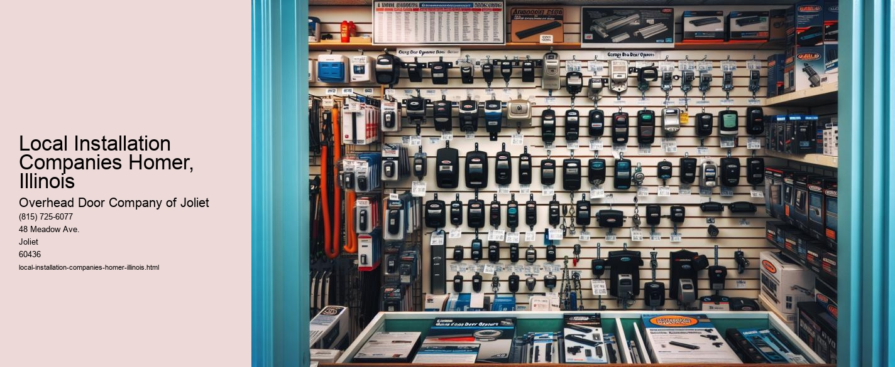

Serving Joliet, IL and surrounding Will County communities including:
Authorized Dealer for Overhead Door™ Openers and Accessories.

In the heart of Illinois lies the quaint town of Homer, a community that embodies the spirit of small-town America. Nestled amidst the picturesque landscapes of the Midwest, Homer may not boast the size of a bustling metropolis, but it certainly holds its own when it comes to local businesses and services. Among these, local installation companies play a pivotal role, providing essential services that contribute to the town's charm and functionality.
Local installation companies in Homer, Illinois, are more than just service providers; they are integral threads in the fabric of the community. These companies, often family-owned and operated, offer a wide range of services including home improvement, electrical, plumbing, and HVAC installations. Their impact extends beyond mere business transactions; they foster community relationships and enhance the quality of life for residents.
One of the key advantages of relying on local installation companies is their intimate knowledge of the region.
Moreover, these companies contribute significantly to the local economy. By employing residents and sourcing materials from nearby suppliers, they ensure that the economic benefits remain within the community. This cycle of local investment strengthens the towns financial stability and encourages further development.
Another compelling aspect of local installation companies is their commitment to personalized customer service. In a world increasingly dominated by automated transactions and impersonal interactions, these businesses offer a refreshing contrast. Customers can expect to engage directly with knowledgeable professionals who take the time to understand their specific needs. This personal touch not only ensures higher quality service but also builds trust and long-lasting relationships between the business and the community.
Furthermore, local installation companies often lead the way in adopting environmentally friendly practices.
In conclusion, local installation companies in Homer, Illinois, are much more than service providers; they are community pillars that enhance both the economic and social fabric of the town. Through their local expertise, economic contributions, personalized service, and commitment to sustainability, these businesses not only meet the needs of their customers but also enrich the community as a whole. In supporting them, residents affirm the value of community, trust, and local pride, ensuring that Homer remains a vibrant and thriving place to call home.
Installation Services in Joliet, IL Homer, Illinois